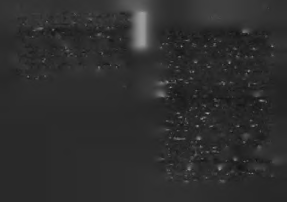

başarmaya çalışıyorsunuz. Gelecekte bir kitabımda sizin de başarı
Bir gün, konferansıma gelen bir kadın şöyle demişti: “Si
öykünüze yer vermek benim için büyük mutluluk kaynağı olacak.15
zin konuk olduğunuz TV programlarını bir yıl boyunca takip et
Yaşlarımız, siyasi tercihlerimiz, sosyal sınıflarımız, yaşam
tim. Söylediklerinizden en beğendiğim cümleleri bir kağıda yazıp,
tarzlarımız, cinsiyetlerimiz, eğitim seviyelerimiz farklı farklı
o gün buzdolabının kapağına asıyordum. Akşam eşim ve çocukla
ama bizi bir (a)raya getiren şey büyük işler başarma tutku
rım gelince o sözleri okuyor, çok beğeniyorlardı. Adını, “annemin
muz. Eğer içinizde güçlü bir başarılı olma isteği varsa, sizi de
başarı gazetesi" koymuşlardı. Çok teşekkür ederim size!"
aramıza bekleriz!
Kendini sadece çocuklarının karnmı doyurmakla görevli
Helen Keller der ki: “Ben bir kişiyim ama gene de biriyim.
saymayan, aile bireylerinin beynini başarı bilgisiyle nasıl doyu
Her şeyi yapamam ama gene de bir şeyler yapabilirim. O yapabilerabileceğini de düşünen, çocuklarına başarı baskısı yapmadan ceğim bir şeyleri yapmayı asla reddetmeyeceğim." "Her şey seninzekice bir yaklaşımla onlara başarıyı sevdiren bu kadına ben le başlar" felsefesinin temeli budur.
de hayran kaldım. Kendimi onun buzdolabının kapağına asacağı
Eğer kendiniz ya da sevdikleriniz için yapabileceğiniz bir
cümleler kurmakla sorumlu hissediyorum!
şey varsa; başka bir gün değil bugün, daha iyi imkânlara ula
Hepimiz mum olup kendimizi yakarak dünyayı aydınlat
şınca değil mevcut şartlarda, kendini iyi hissetmeye başladıkmak zorunda değiliz, bazılarımız da ayna olup aldığımız ışıtan sonra değil o anki hisleriyle, dışarıdan destek gelecekmiş
ğı yayarak onu çoğaltabiliriz. O kadm böyle bir aynaydı. Siz
gibi değil, hiç kimse yardım etmeyecekmiş gibi düşünerek yede bu kitabın aynası olmak ister misiniz?
rinden kalkmak ve yapılması gerekeni yapmak gerekir. Muhtaç olduğunuz güç içinizde, ihtiyaç duyacağınız bilgi ise ula
T a b a k sevdiği d e riy i ye r d e n y e r e ç a la rm ış !
şabildiğiniz yerlerde mevcuttur. Tutkunuzu, tekniğinizi ve cesaretinizi topladığınızda kesinlikle daha ağır olacaksınız.
Son sözüm incinmeden ve incitmeden ilerle(t)mek üzerine. Bir atasözü, "Tabak sevdiği deriyi yerden yere çalarmış!" der.
Y a ışığın kaynağı nl ya da ayna ol, ışığı ya ns ıt!
Anlamı, deriyi şekillendiren usta (tabak), sevdiği ve potansiyel gördüğü deriyi yerden yere çarpar, ondan en iyi giysiyi Başarısızlık karanlığa benzer, hep vardır. Başarı ise ışık gibi
çıkarmak için onu daha çok zorlarmış!
dir, kendini var etmek için bir enerji kaynağına, kendini çoğalt
Ben de okurlarımda çok büyük potansiyel gören biriyim!
mak için de aynalara ihtiyaç duyar. Her kitap bir ışıktır ve ışı
Bu yüzden kitap içinde bazen sınırınızı zorlamış, sizi yerden
ğın gücünü yaymak için aynalar da gerekir. İdeal okur, ışıyere çalmış olabilirim. Sert yaptıysak sebebi sizi sevmemizdi!
ğın kaynağına ayna olup, onu çevresindeki karanlık bölge
Anladınız siz beni:)
lere yönlendirendir.

154